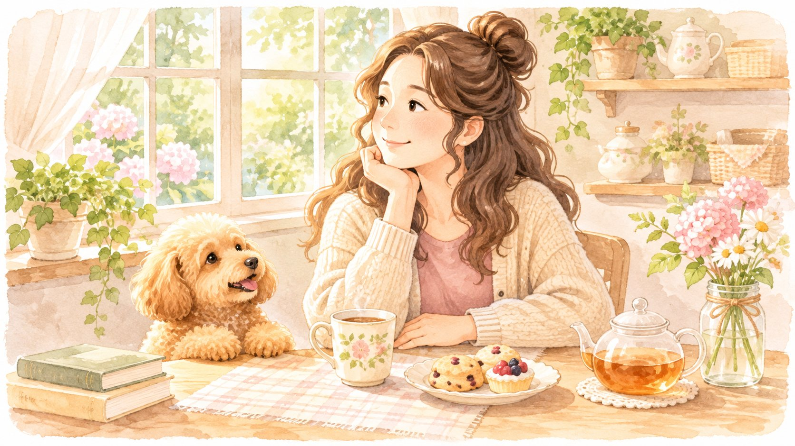

お茶をいれて、ひと息。おやつ時間の小さな幸せ。
お茶とおやつで、ほっとひと息。 いつもの日々を少し豊かにする、いいもの探しの記録です。
サンプルについてLITTLE JOYS, EVERY DAY
ハナと私の、心地よい暮らし
好きなものを、少しずつ。
おいしいものも、暮らしの道具も。
ハナと過ごす日々の「いいな」を綴ります。

CATEGORIES
THE JOURNAL
毎日に、ひとさじの楽しみを。
お茶とおやつで、ほっとひと息。 いつもの日々を少し豊かにする、いいもの探しの記録です。
サンプルについて毎日使うものこそ、心地よく。 いつもの日々を少し豊かにする、いいもの探しの記録です。
サンプルについてそばにいる幸せを、少しずつ。 いつもの日々を少し豊かにする、いいもの探しの記録です。
サンプルについて今の私に、しっくりくる一着。 いつもの日々を少し豊かにする、いいもの探しの記録です。
サンプルについて心が動く、小さな寄り道。 いつもの日々を少し豊かにする、いいもの探しの記録です。
サンプルについて自分をいたわる、やさしい時間。 いつもの日々を少し豊かにする、いいもの探しの記録です。
サンプルについてMY FAVORITES
毎日をちょっと心地よくするもの。
気になるものを、楽天ROOMに集めています。
リンク先には、商品購入により紹介者へ報酬が発生するものがあります。
ABOUT THIS BLOG
年齢を重ねるほど、自分の「好き」を大切に。
「60代からのいいもの探し」は、ハナと過ごす毎日のなかで見つけた、
小さな楽しみや心地よいものを綴るブログです。
あなたの「これ、いいな」が見つかりますように。